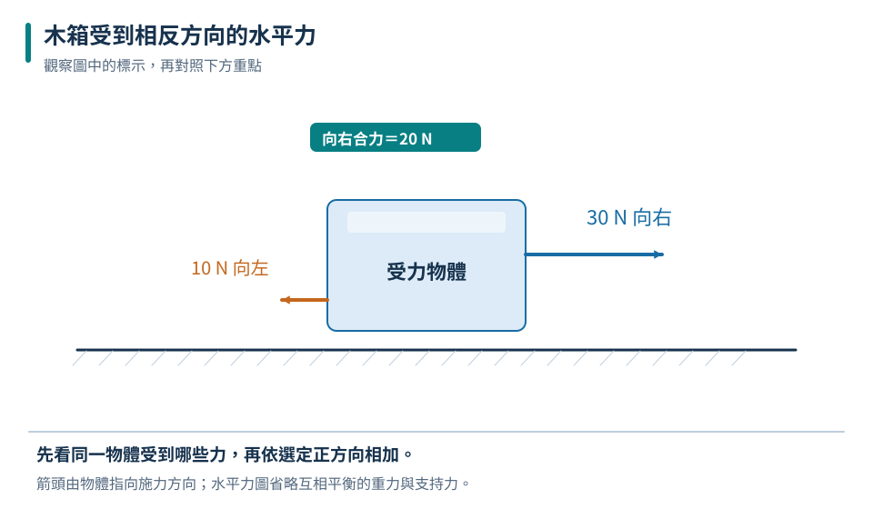
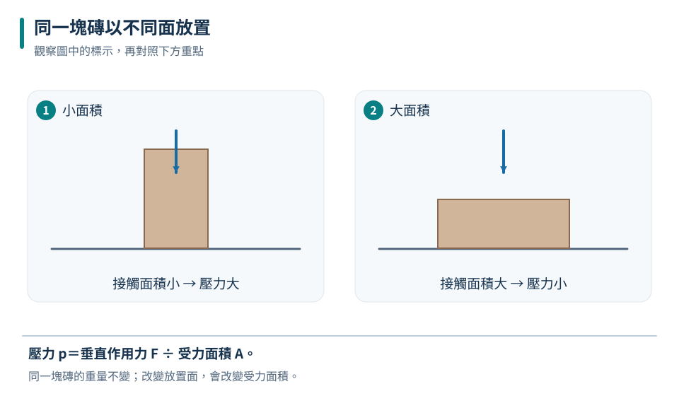
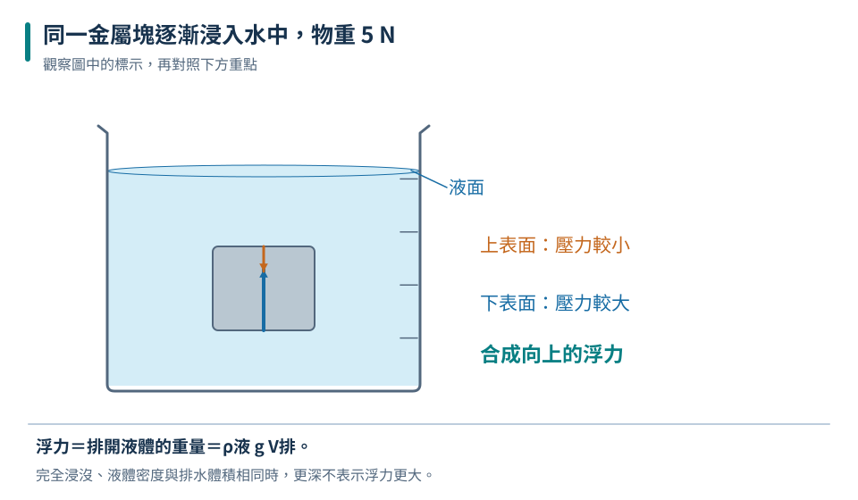

力的三要素
大小、方向、作用點都可能影響結果。
八下 · 理化 · 第 6 章
推門、拉橡皮筋、背書包和漂浮的船，都能用力來解釋。本章先學會指出力的大小、方向及作用點，再追問同樣的力為何有時壓得深、有時壓得淺。最後把視線移進液體，利用深度、排水體積和受力平衡，理解液壓與浮力。
先備概念：知道質量、體積、密度的意義、能做面積及單位換算
LEARN & EXPLAIN
力是物體間的交互作用，可能讓物體形狀改變，也可能改變運動狀態。兩個現象不必同時出現：拉長彈簧時形狀改變；轉彎中的球即使速率暫時相同，運動方向也在改變。要描述力，必須說出誰對誰施力。
力用牛頓（N）表示。畫受力圖時只畫「作用在研究物體上」的力，箭頭起點表示作用點、朝向表示方向，長短在同一比例尺下表示大小。同一直線上的力可用正負方向相加；合力為零代表作用互相抵消，不能推論物體完全沒有受力。
大小、方向、作用點都可能影響結果。
先圈定物體，再找外界對它施加的力。

圖中只分析水平力；箭頭長度用同一尺度表示大小。
合力為向東 5 N。
合力為零不是沒有力；靜放桌上的書仍受到重力與桌面支持力。
LEARN & EXPLAIN
重力是地球對物體的吸引力；在地表附近通常鉛直向下。彈力來自物體的彈性形變，彈簧秤便利用彈簧伸長量測力，但必須先校零並在適用範圍內使用。支持力是接觸面對物體的推力，方向垂直接觸面，不一定鉛直向上。
摩擦力沿接觸面，阻礙接觸面間的相對滑動或滑動趨勢。例如鞋底向後推地，地面對鞋的靜摩擦力可以向前，使人前進。因此摩擦力不一定與整個物體的運動方向相反。比較摩擦時，要控制材質、表面狀況及壓緊程度。
質量是物質多寡的量，重量是重力大小；兩者單位不同。
讀的是張力，超過彈性範圍就不宜再用原刻度判讀。
| 拉力（N） | 長度（cm） | 伸長量（cm） |
|---|---|---|
| 0 | 8 | 0 |
| 2 | 9 | 1 |
| 4 | 10 | 2 |
| 6 | 11 | 3 |
要用伸長量，而不是總長度，判斷拉力的比例。
拉力為 6 N。
彈簧總長度增加一倍不代表拉力增加一倍；必須先扣除原長。
LEARN & EXPLAIN
相同的垂直作用力，集中在小面積上通常造成較強的壓迫效果。物理上的壓力是單位面積承受的垂直力，寫成 P＝F／A，單位帕斯卡（Pa），1 Pa＝1 N／m²。計算前要確認力是垂直於受力面，並把面積換成平方公尺。
雪鞋擴大接觸面積，可以降低人對雪地的平均壓力；刀刃做得薄，則讓相同作用力集中於較小面積。比較壓力時，必須同時檢查力與面積，不能看到面積較小就直接說壓力較大。本章先採用平均分布的模型，實際接觸面上的壓力未必處處相同。
1 cm²＝0.0001 m²，面積換算不能只除以 100。
要驗證面積的效果，應固定垂直力。
| 擺法 | 垂直力（N） | 接觸面積（m²） | 平均壓力（Pa） |
|---|---|---|---|
| 平放 | 30 | 0.03 | 1000 |
| 側放 | 30 | 0.01 | 3000 |

重量不變，接觸面积縮為三分之一，平均壓力增為三倍。
平均壓力為 3000 Pa。
力是 N，壓力是 Pa；「重量一樣」只保證作用力相同，不保證壓力相同。
LEARN & EXPLAIN
靜止液體會對接觸面施壓。同種液體在相同深度的壓力相同，越深壓力越大；若表面所受壓力相同，同深度時密度較大的液體壓力較大。開口容器還承受大氣壓，吸管是利用口腔內外的壓力差使飲料上升。密閉液體可傳遞外加壓力，液壓機因活塞面積不同而有不同作用力。
液體對浸入物體的各處施壓，下方壓力較大，使合力呈現向上的浮力。阿基米德原理指出浮力等於排開流體的重量；排水體積是浸入的部分，不一定等於物體總體積。物體漂浮且靜止時，浮力等於物重；物體完全浸入、流體密度不變時，繼續下壓而不改變體積，不會增加浮力。
比較浮力要看流體密度及排開體積。
不受其他垂直力而靜止漂浮時，向上浮力與向下重量平衡。
相同外加壓力乘較大活塞面積，可得較大力，但不是憑空產生能量。
| 排開水的重量（N） | 彈簧秤讀數（N） | 浮力（N） |
|---|---|---|
| 0 | 5 | 0 |
| 1 | 4 | 1 |
| 2 | 3 | 2 |

慢慢浸入、靜止讀值，且金屬塊不接觸容器。物重＝張力＋浮力。
浮力為 3 N，等於排開水的重量。
沉底的物體也可受浮力；若接觸底部，還須考慮支持力，不能只用漂浮的兩力平衡。
TRY, OBSERVE, EXPLAIN
REVIEW
大小、方向、作用點都可能影響結果。
回到這一節複習質量是物質多寡的量，重量是重力大小；兩者單位不同。
回到這一節複習1 cm²＝0.0001 m²，面積換算不能只除以 100。
回到這一節複習比較浮力要看流體密度及排開體積。
回到這一節複習CHAPTER TEST
先獨立作答，再看解析。中難與難為編者估計，尚未經學生實測校準。